1 用户手册申明
1.1 著作权&约束
本手册之版权归汇高网讯科技（北京）有限公司（以下简称汇高网讯）所有，任何复制和使用都必须得到汇高网讯的书面认可。汇高网讯保留在不通知的情况下修改本手册的权力。
WeTogether员工考勤管理及任务管理系统1.0软件的版权归汇高网讯科技（北京）有限公司所有，任何商业使用、企业内部经营中使用都必须得到汇高网讯的软件授权许可。
1.2 保证和约定义务
汇高网讯将为合法用户负责本手册的解释权，对任何非法用户，汇高网讯将不承担任何法律责任。
2 前言
2.1 编写目的
本文档是《WeTogether员工考勤管理及任务管理系统1.0用户手册》。
目的：主要说明用户如何使用该手册、如何操作WeTogether员工考勤管理及任务管理系统1.0以及相关的注意事项。
2.2 缩写词和术语
|
WeTogether
|
WeTogether员工考勤管理及任务管理系统1.0的注册商标
|
|
IE
|
中文浏览器, Internet Explorer
|
|
J2EE
|
Java
2 Enterprise Edition ，基于Java2平台的企业级应用开发体系
|
|
双击
|
就是双击鼠标，连续快速的按两下
|
|
单击
|
就是单击鼠标，按一下鼠标键
|
|
选中
|
将定位标志指向该记录，即将光标指向当前记录，被选记录为高亮显示。
|
3 系统概述
3.1 系统软硬件环境要求
1、硬件环境
机型要求：PC、PC Server、服务器
最小内存：256MB
最小硬盘空间：1GB
2、软件环境
操作系统：支持Windows 2K/XP，Linux、Solaris等Unix系统
数据库：支持MySQL、SQL Server、Oracle、informix等数据库
JAVA JDK：1.5及以上版本
Web Server：支持Tomcat5.0、Weblogic、Websphere等
3.2 系统技术特点
1、灵活的客户自定义
用户可以根据各自的特色和不同需求定制组织机构、皮肤、访问权限等，保障用户的工作更加方便快捷。
2、跨平台支持
采用纯JAVA技术开发，JAVA技术与操作系统无关的特性使得系统具有极好的跨平台移植性，真正实现了一次开发随处应用；基于N层软件体系结构，使系统具有极大的伸缩性。
3、功能模块化体系结构
系统各功能模块彼此有接口又相互独立，可拆分、可选、可支持将来各模块功能的单独扩展和定制。还可根据用户的要求对各模块进行二次开发，适应不同用户的特殊需求。
4、严密安全控制
系统支持多重级别、多个层次的权限定义，通过授权实现分级管理。另外还采取数据加密、用户操作日志报告等安全措施，并结合操作系统、数据库的安全管理，保证系统数据的机密性及完整性，保障各项业务的正常运转。
5、高效率、易使用
系统基于B/S结构，对硬件降低要求，用户端不需安装任何软件，只需通过浏览器即可访问，为中小企业提供了较高的性价比。系统在操作上保持了功能明确、提示清晰、流程清楚的风格，让用户的使用更加方便快捷，让系统推广实施更加迅速。
3.3 系统技术架构
WeTogether员工考勤管理及任务管理系统1.0采用的是J2EE技术架构，控制层使用的是Struts，数据库访问用的是Hibernate，
整个系统由Spring统一管理，安全控制由Spring Security控制，表现层使用的是Ext js，系统架构如下：
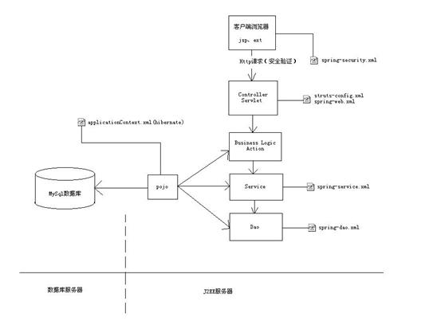
3.4 系统主要功能列表
该系统主要用于企事业单位在局域网上或者互联网上进行考勤打卡管理、任务管理、项目管理等网络化、无纸化协同办公。
目前版本的主要功能如下：
功能类别
|
功能点
|
功能描述
|
系统初始化配置
|
系统初始化配置
|
进行系统参数的初始化
|
系统登录
|
系统登录
|
输入用户名、口令进行系统登录
|
系统管理
|
员工管理
|
员工的增删改、按部门查询等
|
部门管理
|
部门的增删改及部门员工列表的显示
|
权限管理
|
把功能点权限赋给角色
|
角色管理
|
角色的增加删除，并为角色增加删除用户
|
项目管理
|
项目信息的增删改
|
打卡管理
|
个人打卡
|
个人上下班打卡
|
个人打卡月度明细
|
查询当前月及一起月份个人的打卡记录
|
月度汇总
|
按所有人、各部门汇总统计员工的月度考勤情况
|
年度汇总
|
按所有人、各部门汇总统计员工的月度考勤情况
|
打卡记录调整
|
有权限者可以对打卡时间、事由等进行调整
|
任务管理
|
管理任务
|
任务的增删改查；
|
调度任务
|
调度任务给别的员工
|
审核任务
|
对于已经完成提交的任务进行审核
|
提交管理
|
将任务提交，等待审核
|
任务流程记录
|
显示任务的操作流程，包括操作人，操作时间，操作动作，接收者等
|
辅助功能
|
密码修改
|
修改登录密码
|
换肤功能
|
替换当前的界面风格
|
列表排序和定制
|
列表的表头，可以指定某列进行正序、逆序排序，还可以定制哪些列显示，哪些列不显示
|
4 系统初始化配置
第一次部署系统代码时，系统会提示进行如下图所示的系统初始化配置，
请填写或检验数据库主机、数据库端口号、数据库名称、数据库用户、数据库密码、域名、部署路径、端口号等配置项。
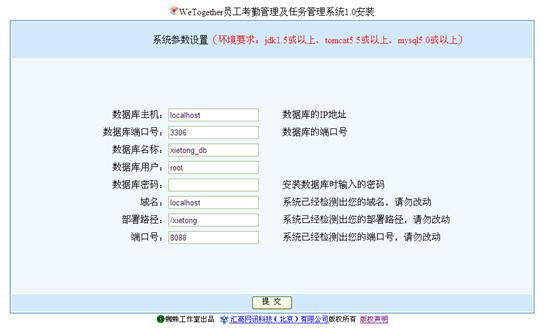
5 系统登录
在浏览器地址栏输入形如http://192.168.1.188:8088/xietong的地址（具体地址要问系统管理员），然后输入用户名、口令，就可以完成系统的登录。
系统登录页面入下图所示。
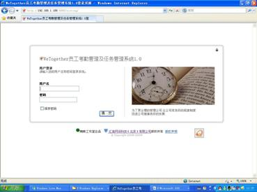
6 系统管理
6.1 员工管理
员工管理主要是针对本系统的实际使用用户进行管理，包括对个人基本信息的管理，为员工指定部门，
指定上级领导。其中为了保证用户登录的安全性，对员工的登录密码采用MD5加密。如下图：
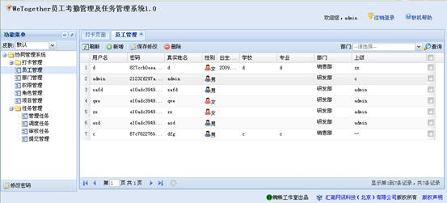
6.1.1 添加员工
点击“添加员工”按钮，系统会弹出添加员工的一个窗口，在这里可以输入用户的用户名、密码、真实姓名、性别、出生日期、学校、专业、部门、上级姓名等。对表单的各项输入都有验证，比如用户名不能重复、密码长度要求等。如下图：
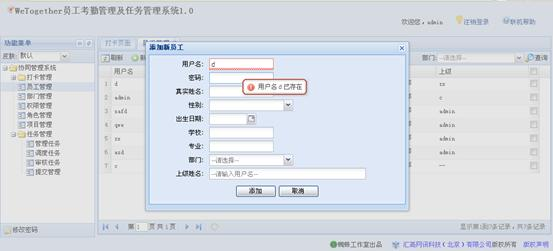
6.1.2 修改员工信息
单击某个单元格，该单元格信息会自动变成可修改状态，在满足验证条件的前提下可以任意修改，修改之后要点击上面的“保存修改”按钮，才会将修改的信息与数据库中的信息进行同步。
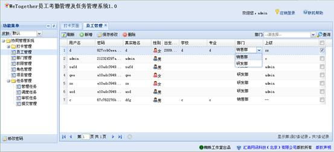
6.1.3 按部门查询
系统还提供了按部门查询员工的功能，可以更方便的让管理人员对员工进行相应操作。
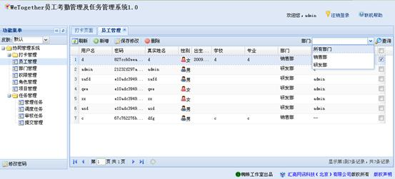
6.1.4 删除员工
选中某个员工，或者按住Shift或Ctrl批量选中，然后点击上面的删除按钮，系统会进
行删除确认。点击确定后会将选中的员工删除，相应的员工打卡信息也被级联删除掉。
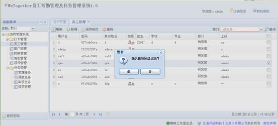
6.2 部门管理
部门管理主要提供对部门信息的增删改，以及查看属于该部门的员工情况的功能。在打开该页面的时候默认只能看到部门的名称，展开之后可以看到部门的详细情况描述。
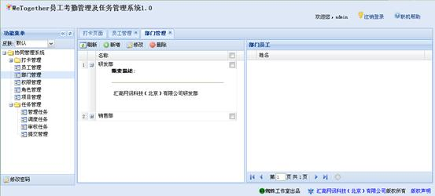
6.3 权限管理
角色和权限可以说是每个管理系统必不可少的基本功能。本系统采用的权限管理是在springsecurity的模型基础上的通过URL拦截来实现的。其中，每个员工可以具备不同的角色，每个角色具备各种不同的功能，
权限管理就是列出系统提供的各种各样的功能点，以及要进行该功能操作需要具备的角色。如下图，左侧列出的是本系统的基本功能项，点击某一项后右侧列表中的角色选中的即为要访问该功能需要具备的角色。同时可以增加选中或取消选中，然后点击右下角的“保存修改”按钮来修改权限对应的角色。
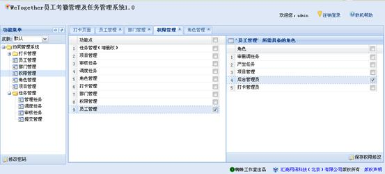
6.4 角色管理
角色管理主要是对角色的增删改操作。点击某个角色，会在右侧的列表中列出具备该角色的用户，我们可以添加一个已存在的用户或者删除某个用户来实现角色的管理操作。
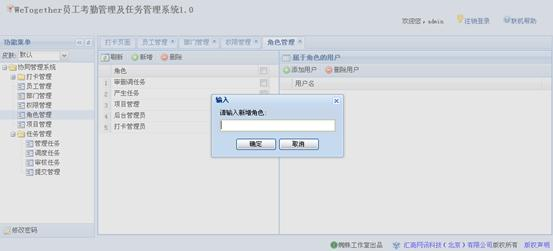
6.5 项目管理
项目管理主要提供对项目信息的增删改，项目信息主要用于任务管理功能来指定任务所属的项目。
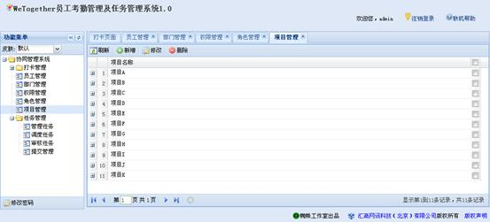7 打卡管理
用户可通过此模块完成日常打卡考勤，主要有个人打卡、个人打卡月度明细、打卡月度统计、打卡年度统计、打卡调整。其中打卡人工调整部分包括请假管理、特殊情况调整等。
7.1 个人打卡
登陆系统后，在系统的主页有打卡按钮，点击打卡按钮会出现相应打卡提示，是正常上下班，还是迟到或者早退。
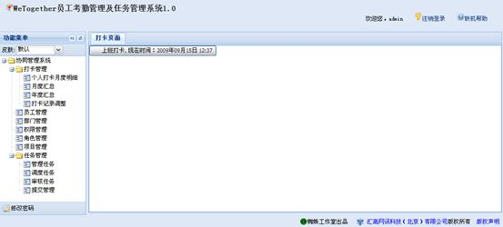
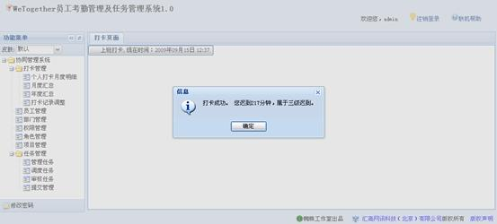7.2 个人打卡月度明细
点击导航菜单中的个人打卡月度明细,系统会列出当前登录用户的当月打卡详细记录，包括上下班时间、请假时间等，如下图：
选择不同的月份，点击查询按钮会相应的查询该月份的详细打卡记录。
7.3 月度汇总
月度汇总是将所有员工某个月的打卡信息统计之后呈现的结果，主要包括个人的工作时间、加班时间、事假时间、病假时间、休假时间，以及迟到早退次数，点击某个人的月度统计还可以查看该员工的月度详细打卡记录。页面如下：
另外月度统计还提供按部门查询，按月度查询，重新统计等功能。
7.4 年度汇总
功能与月度统计功能类似，统计员工一年的打卡信息。
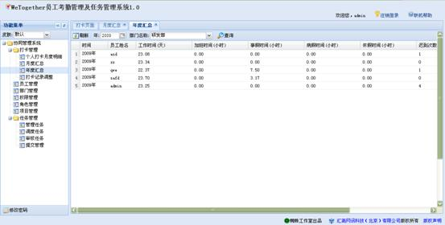7.5 打卡记录调整
管理人员可以根据实际情况对员工的打卡记录进行调整，譬如有请假、事假、病假、休假等没有打卡记录或者缺少打卡记录时，由管理人员进行补充打卡或调整打卡。
如下图：
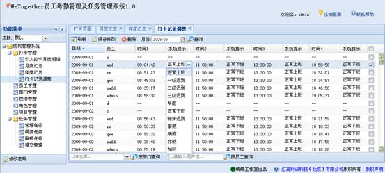
另外调整的时候还可以按部门查询或按员工用户名查询等，如下图：
8 任务管理
任务管理主要分为管理任务（增删改查）、调度任务、审核任务、提交任务。任务状态有待完成、待审核、已完成三种，任务状态随着任务所处的阶段自动发生改变，新产生的任务状态为待完成，任务有负责人完成，提交给上级审核后，状态变为待审核，审核通过后状态变为已完成，否则为待完成。
8.1 管理任务
管理任务界面如下图所示
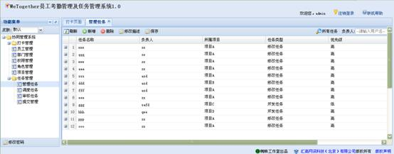
点击“新增”按钮，弹出图6.2所示对话框，输入任务详细信息，单击“添加”按钮，将新增加的任务保存到数据库中。
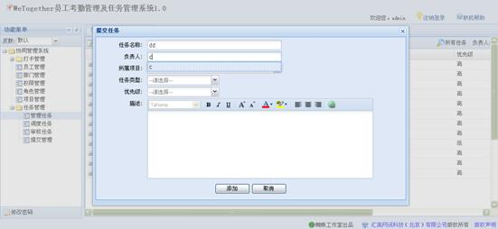
修改任务的名称、所属项目、任务类型、优先级可以直接点击要修改的数据，该数据变为可编辑状态，修改完后点击菜单栏中的“保存”，可将所做修改保存到数据库中。
要修改任务的详细描述，首先选中要修改的任务，再点击菜单栏中的“修改描述”，可弹出修改任务信息对话框，如图6.3所示。
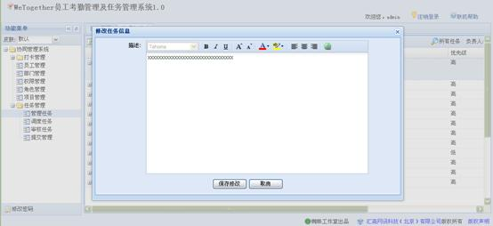8.2 调度任务
调度任务是将已分配出去的任务重指定负责人，双击要修改的负责人，该列变为下拉列表，选择要指定的负责人，调度好后，点击“保存修改”，可将所做修改保存到数据库中。如图6.4所示。
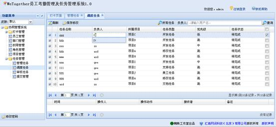8.3 提交任务
可以点击“自己待完成的任务”查询出自己待完成的任务，任务完成后选中点击“送去审核”，改任务状态由“待完成”变为“待审核”，送给相关人员审核，审核通过后任务状态变为“已完成”，审核不通过，会重新发回来，状态为“待完成”。如图所示。
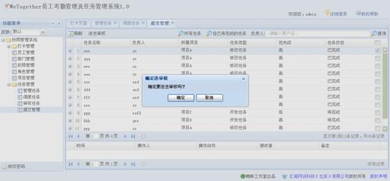8.4 审核任务
具有审核权限的人可以对提交的任务进行审核，双击任务状态，任务状态变为下拉列表，列表中有“审核通过”和“审核不通过”，审核完成后点击“保存修改”，如图所示。
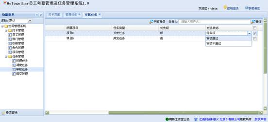8.5 任务流程记录
选中每条任务，在任务列表的流程记录窗口中，显示任务的处理流程，包括操作人，操作时间，操作动作，接收者等信息。
9 辅助功能
9.1 密码修改功能
在导航树的下面有一个“修改密码”按钮，点击后会弹出修改密码的窗口，提示用户输入新的密码，点击确定保存修改。
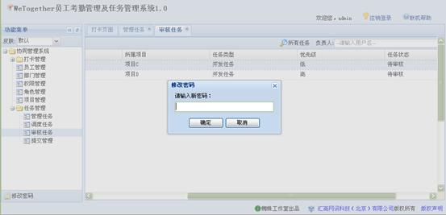9.2 换肤功能
在导航树的上面有一个下拉列表，修改下拉列表的选中值，系统会自动替换当前的皮肤。
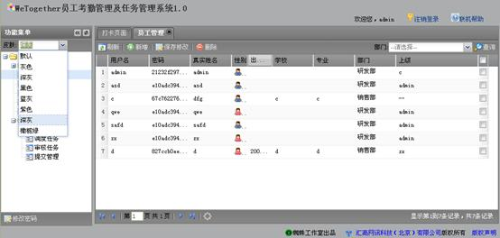9.3 列表排序和定制功能
列表的表头，可以指定某列进行正序、逆序排序，还可以定制哪些列显示，哪些列不显示。
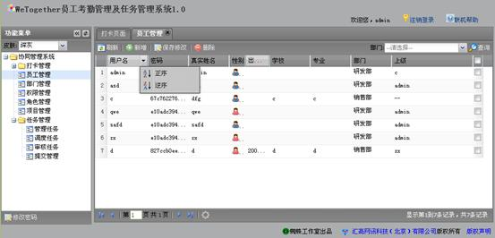